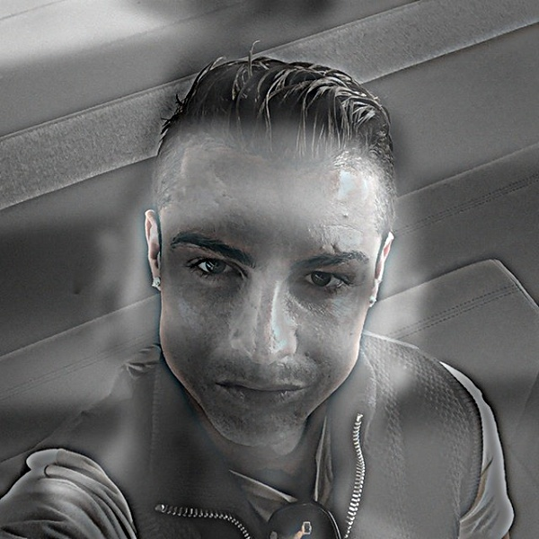
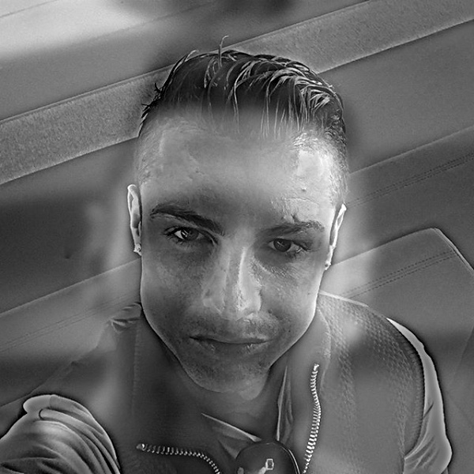
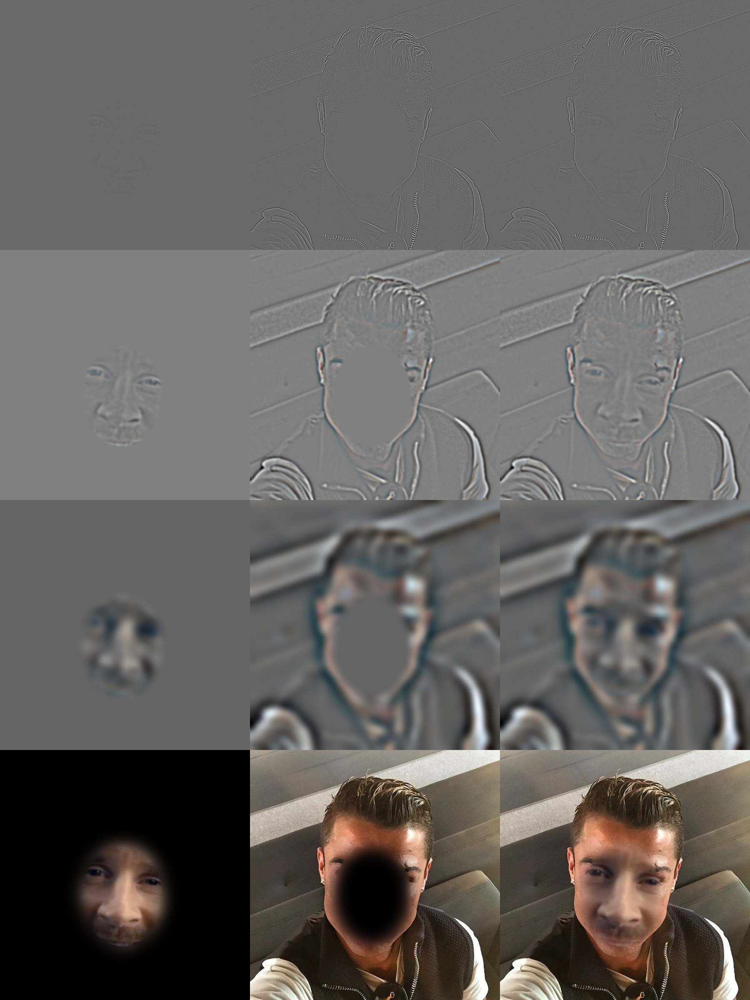

Project 2
Part 1: Fun with Filters
Part 1.1: Convolutions from scratch
Padding
def pad_same(image, kernel_h, kernel_w):
image_h, image_w = image.shape
top, left = kernel_h // 2, kernel_w // 2
padded = np.zeros((image_h + kernel_h - 1, image_w + kernel_w - 1))
padded[top:top + image_h, left:left + image_w] = image
return paddedFour loops
def conv2d_four(image, kernel):
image_h, image_w = image.shape
kernel_h, kernel_w = kernel.shape
padded = pad_same(image, kernel_h, kernel_w)
flipped = kernel[::-1, ::-1]
out = np.zeros((image_h, image_w))
for i in range(image_h):
for j in range(image_w):
val = 0.0
for h in range(kernel_h):
for w in range(kernel_w):
val += padded[i + h, j + w] * flipped[h, w]
out[i, j] = val
return outTwo loops
def conv2d_two(image, kernel):
image_h, image_w = image.shape
kernel_h, kernel_w = kernel.shape
padded = pad_same(image, kernel_h, kernel_w)
flipped = kernel[::-1, ::-1]
out = np.zeros((image_h, image_w))
for i in range(image_h):
for j in range(image_w):
out[i, j] = np.sum(padded[i:i + kernel_h, j:j + kernel_w] * flipped)
return outComparison with scipy
Box filter and finite differences


Part 1.2: Finite difference operator


Part 1.3: Derivative of Gaussian (DoG) filter


DoG filters


Bells & Whistles: gradient orientation

Part 2: Fun with Frequencies
Part 2.1: Image sharpening


Blur, then sharpen


Part 2.2: Hybrid images
Derek and Nutmeg


Messi and Ronaldo


Lily pond: photo and painting


Anthropic and ChatGPT logos


Frequency analysis: Messi and Ronaldo


Bells & Whistles: color


Part 2.3: Gaussian and Laplacian stacks
Apple


Orange


Recreating Szeliski Figure 3.42

Part 2.4: Multiresolution blending
The oraple


Irregular mask: Messi and Ronaldo


Irregular mask: lily pond


The blending process
